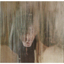

Diffusion Models & Flow Matching
By Your Name · CS180 / 280A
This project implements Part A (Diffusion Models) and Part B (Flow Matching) from scratch. All experiments, sampling loops, image-to-image editing, inpainting, visual anagrams, hybrids, and UNet training results are documented below.
Part A — Diffusion Models
Part 0 — Prompt Embeddings & Setup
Insert reflections about prompt generation and HuggingFace embedding workflow.


1.1 — Forward Process
Forward diffusion results for t = 250, 500, 750.


1.2 — Classical Gaussian Denoising


1.3 — One-Step Denoising
UNet one-step denoising results.


1.4 — Iterative Denoising
Denoising progression from strided timesteps.


1.5 — Diffusion Model Sampling




1.6 — Classifier-Free Guidance


1.7 — Image-to-Image Translation (SDEdit)
SDEdit results for noise levels i_start = 1, 3, 5, 7, 10, 20.


1.7.1 — Editing Hand-Drawn & Web Images
Web image edits across noise levels.


Hand-drawn images


1.7.2 — Inpainting
Campanile inpainting results.


Inpainting example 2 — Alyosha


Inpainting example 3 — Tiger


Inpainting example 4 — SpongeBob Fries


1.7.3 — Text-Conditional Image-to-Image Translation


1.8 — Visual Anagrams
Each illusion flips upside down when hovered. Three independent anagrams are shown below.


1.9 — Hybrid Images


Part B — Flow Matching from Scratch
1.2 — One-Step Denoising UNet Training
Training loss curve for the one-step denoiser.

Epoch 1 reconstruction results


Reconstructed digits at test time

1.2.3 — Denoising Pure Noise


Insert analysis describing the centroid effect & observed patterns.
2.2 — Training the Time-Conditioned UNet

2.3 — Sampling from the Time-Conditioned UNet

2.5 — Class-Conditioned UNet Training

2.6 — Sampling with Classifier-Free Guidance

Without Scheduler


Conclusion
Reflection and summary of discoveries from both diffusion modeling and flow matching pipelines.